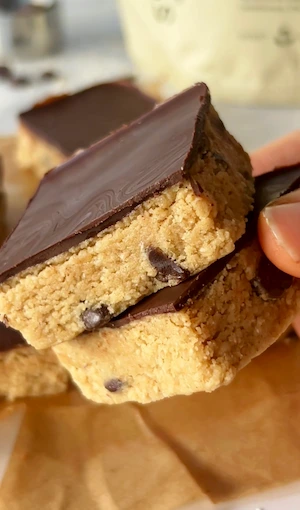

No Bake Cookie Dough Protein Bars (stop buying store bought, make these instead)
this is your sign to stop buying store bought protein bars. i know they're convenient, i know they look good on the shelf, but once you see how easy it is to make them at home with ingredients you can actually recognise, you won't go back. these no bake cookie dough protein bars take about 5 minutes to make, they taste like actual cookie dough, and they have a proper thick chocolate topping that sets hard in the freezer. they've been on repeat in my kitchen ever since i first made them.
the best part? no baking, no cooking, no fuss. just a food processor, a lined container, and 20ish minutes in the freezer.
why homemade protein bars are worth it: most store bought protein bars are packed with ingredients that don't need to be there. artificial sweeteners, inflammatory oils, a long list of additives that make the shelf life impressive but the nutritional value and effect on your gut questionable. when you make them at home you control exactly what goes in. these bars use real whole food ingredients, they're refined sugar free, and they genuinely taste better than anything i've bought in a shop. the cookie dough flavour is real, not artificial, because it comes from the combination of almond flour, oat flour and vanilla protein powder rather than any artificial flavouring. for that reason, i strongly recommend using a high quality protein powder that also doesn't use artificial ingredients or flavouring. my favourite protein powder is from The Organic Protein Co. you can use code YWG10 for a discount if you'd like to try it out.
let's get into the ingredients! tahini is the ingredient that surprises people most in this recipe. it's sesame seed paste, and it gives the bars a rich, slightly nutty depth of flavour that works really well with the chocolate and emphasises that cookie dough flavour. it's also what binds everything together and gives the bars that soft, slightly dense texture that feels genuinely indulgent. tahini is a great source of healthy fats, plant-based protein, and minerals like calcium and iron, so it's doing a lot more than just holding the batter together. if you don't have any tahini on hand, sub in your favourite nut or seed butter, just note that it may change the taste slightly.
the combination of almond flour and oat flour is what gives the base that classic cookie dough texture. almond flour adds a subtle sweetness, a little more protein and a finer, almost buttery consistency, while oat flour gives a bit more structure and keeps everything from feeling too dense. using both is the key to getting that soft but sliceable texture once frozen.
vanilla protein powder is what bumps up the protein content without changing the flavour. i use a vanilla one here specifically because it leans into the cookie dough vibe and adds a gentle sweetness. if you only have unflavoured protein powder that works too, but you might want to add in a generous splash of vanilla extract. the protein powder you use will massively impact the macros of this recipe, so if you want the highest amount of protein, check the macros of your protein powder per serving.
the coconut oil needs to be solid or at room temperature here, not melted. solid coconut oil helps bind the mixture and gives the bars a slightly firmer texture once they come out of the freezer. if yours has melted in warmer weather, just pop it in the fridge for 10 minutes before using, or use a little less and add more as needed based on how well the batter is coming together.
the maple syrup is just 1 to 2 tablespoons for the whole batch, which keeps the bars refined sugar free and means the sweetness is subtle rather than overpowering. taste the batter before you press it into the container and add the second tablespoon if you feel it needs it. if your protein powder is already sweetened, you may need less. the great thing about these being no bake is that you can taste as you go!
this is a small batch recipe so i use a small lined container. the smaller the container, the thicker your bars will be, which is exactly what i love. press the mixture down firmly so there are no air pockets and the bars hold together cleanly when you slice them. don't be shy to get in there with your hands to make sure the batter is compact.
for the chocolate topping, melt your dark chocolate chips gently and pour over the top in an even layer. let the bars set in the freezer for at least 20 minutes, or until the chocolate is fully firm before slicing. if you try to cut them too soon the chocolate will crack and the bars will fall apart. i also recommend using a hot knife for the most satisfying cuts! these bars can be stored at room temperature for up to 3 days and are best eaten slightly cooled for the best texture. for longer storage, pop them in the fridge or freezer and let them thaw for a few minutes before eating.
if you love all things cookie dough, you have to try my viral cookie dough stuffed dates!
Frequently Asked Questions
What are the macros of these cookie dough protein bars?
I have purposefully left out the macros for this recipe since they change majorly depending on the brand or type of protein powder you are using and how big or small you make the bars. Without adding in the protein powder, the recipe naturally has 16g of protein in it, then add in the amount of protein your chosen protein powder has to get a rough idea of the macros.
How do I get the chocolate topping to be so shiny?
Add a half teaspoon of coconut oil and mix it into the warm melted chocolate for that extra shine.
How do I store no bake cookie dough protein bars?
These bars can be stored in an airtight container at room temperature for up to 3 days and are best eaten slightly cooled for the best texture. For longer storage, keep them in the fridge for up to 1 week or in the freezer for up to 1 month. If storing in the fridge or freezer, make sure to let them thaw for a few minutes before eating so the cookie dough layer has a chance to soften.
Why is my protein bar batter too dry or crumbly?
A dry batter is almost always down to the coconut oil or tahini. Make sure your tahini is runny and well-stirred before measuring, and that your coconut oil is solid but not rock hard. If the batter feels too crumbly after blending, add an extra teaspoon of tahini or a tiny splash of maple syrup and blend again. You can also test the texture by pressing a small amount between your fingers: it should hold together without crumbling. if it doesn't, it needs a little more fat or liquid.
Can I use a different protein powder in this recipe?
Yes, though the type of protein powder you use will affect both the texture and the flavour. Vanilla protein powder works best as it leans into the cookie dough taste, but unflavoured works too with a generous splash of vanilla extract added in. Avoid collagen-based powders for this recipe as they don't bind the same way. Plant-based and whey protein both work well. Keep in mind that some protein powders are much more absorbent than others, so if your batter looks very dry, add tahini or maple syrup a teaspoon at a time until it comes together.
Are these protein bars gluten free?
Yes, as long as you use certified gluten free oat flour. Oats are naturally gluten free but can sometimes be cross-contaminated during processing, so if you're coeliac or highly sensitive make sure your oat flour is labelled certified gluten free. All other ingredients in this recipe are naturally gluten free.
Can I make these into protein balls instead of bars?
Yes! Instead of pressing the batter into a container, roll it into small balls with your hands. You can either leave them as is for a truffle-like finish, or dip each one into melted dark chocolate and let them set on a lined tray in the freezer. They make a great bite-sized snack and are a little easier to grab on the go. The batter is exactly the same, just rolled instead of pressed.
Can I make these protein bars vegan?
Yes, this recipe is already vegan as written, as long as your protein powder is plant-based. Tahini, almond flour, oat flour, maple syrup, and coconut oil are all vegan. Just double-check your chocolate chips and protein powder are dairy free and you're good to go.
Pro Tips
- Ensure you press the batter down firmly and evenly into the container so the bars hold together cleanly when sliced.
- Use a hot knife to slice the bars cleanly. Run the knife under hot water, dry it quickly, and slice straight through. This gives you that satisfying clean cut through both the cookie dough and the chocolate.
- Let the bars sit out for 5 to 10 minutes before eating. Straight from the freezer they're very firm, but a few minutes at room temperature brings out the soft, chewy cookie dough texture and makes them much more enjoyable.
- Taste the batter before you press it into the container and adjust sweetness to your taste. If your protein powder is already quite sweet, you may only need 1 tablespoon of maple syrup. If it's more neutral, go for 2.
No Bake Cookie Dough Protein Bars

Ingredients
Instructions
- Step 1: Add the almond flour, oat flour, vanilla protein powder, tahini, coconut oil and maple syrup to a food processor. Blend until fully combined into a thick dough. Fold in a generous handful of chocolate chips.
- Step 2: Transfer the mixture to a small lined container and press down firmly and evenly.
- Step 3: Melt the dark chocolate chips and pour over the top, spreading into an even layer.
- Step 4: Place in the freezer for 20 minutes or until the chocolate is fully set.
- Step 5: Slice and enjoy. Store any leftovers in the freezer.
Nutrition Facts
Per one serving:
*Nutritional information is estimated and will vary depending on the ingredients and brands you use. Basic macros don't reflect the full nutritional value including vitamins, minerals, antioxidants, and other beneficial compounds. Please use this as a guideline only.